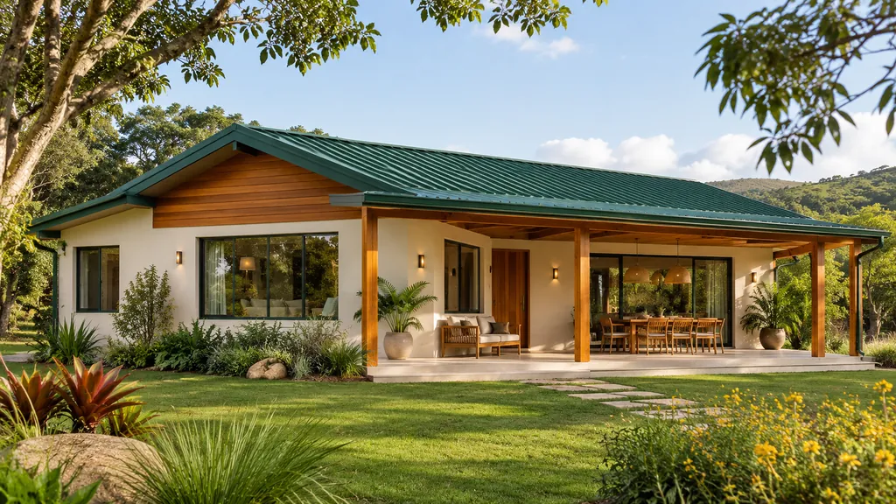
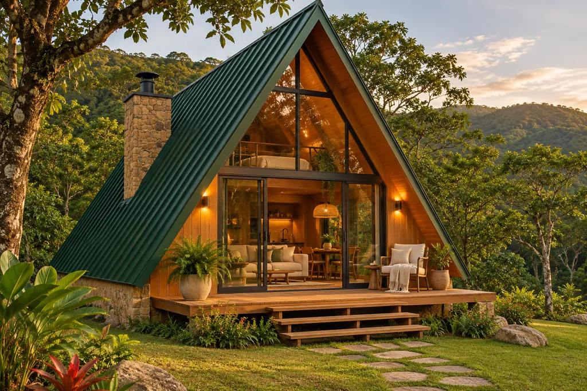
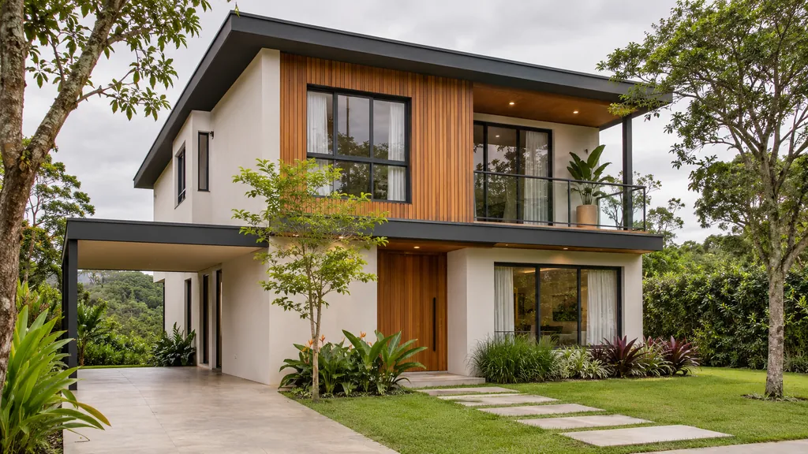

Projetos
Casas e chalés para diferentes paisagens
Cada modelo é um ponto de partida: o projeto final é ajustado ao terreno e ao jeito de viver de quem vai morar.
Catálogo
-

CasaCasa contemporânea
Volume horizontal, varanda coberta ao longo da fachada e beiral em madeira.
- Área
- A confirmar
- Quartos
- A confirmar
- Planta
- Pendente
-

ChaléChalé A-frame
Telhado em duas águas até o chão, fachada envidraçada e deck de madeira.
- Área
- A confirmar
- Quartos
- A confirmar
- Planta
- Pendente
-

CasaCasa familiar
Volumes sobrepostos, revestimento em madeira e varanda voltada para o jardim.
- Área
- A confirmar
- Quartos
- A confirmar
- Planta
- Pendente
Dados em revisãoÁrea, número de quartos, planta, valores e especificações de cada modelo ainda serão enviados pela Lucerna. As imagens são ilustrativas, geradas por IA.
Projeto sob medida
Não encontrou o que imagina?
Os modelos são um começo. Conte sobre o terreno e a sua rotina, e a casa pode partir daí.
Falar com a Lucerna